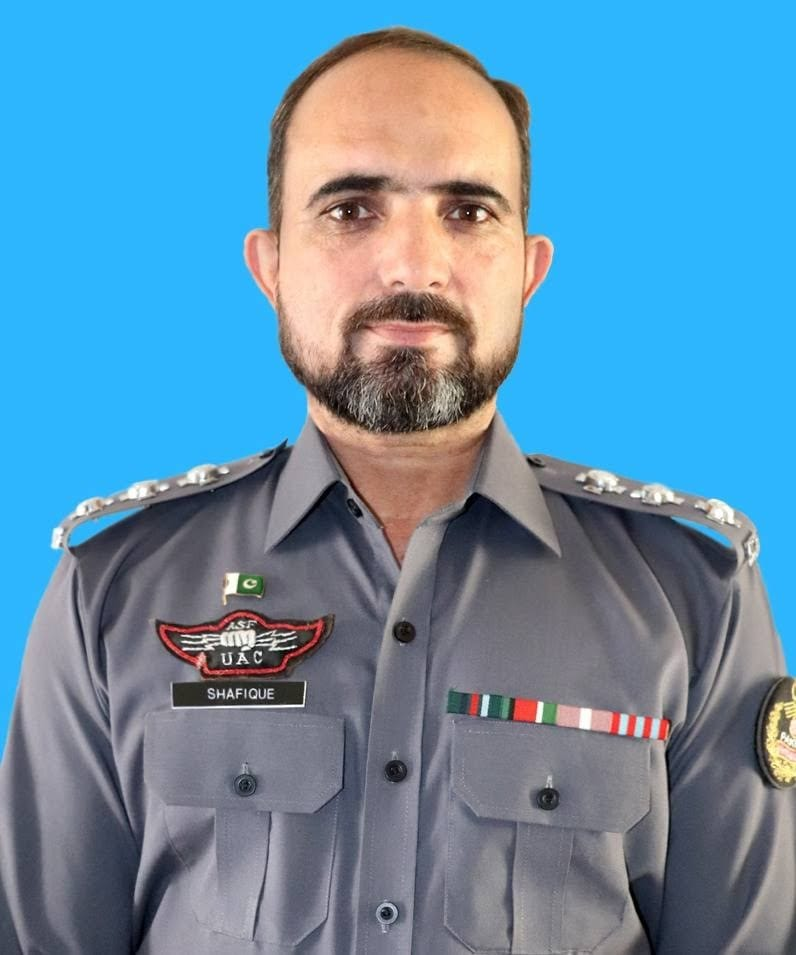

Curriculum Vitae |
||||||||||||||||||||
|---|---|---|---|---|---|---|---|---|---|---|---|---|---|---|---|---|---|---|---|---|
Muhammad Shafique

Mobile No:0331-1210137 |
| Degree / Course | Year of Passing | Instition | Board / University |
|---|---|---|---|
| B.Ed | 1996 | Raees ul Ahrar College of Education, Mirpur (AJK) | University of Azad & Jamu Kashmir |
| B.A | 1994 | F.G Degree College For Men Kharian Cantt | University of Punjab, Lahore |
| F.A | 1992 | F.G Degree College For Men Kharian Cantt | Federal Board, Islamabad |
| Matric | 1990 | F.G Boys High School, Kharian Cantt | Federal Board, Islamabad |
Baggage X-Ray Machines
Surveillance System
Metal Detector Walk Through Gates
Special Assignments: